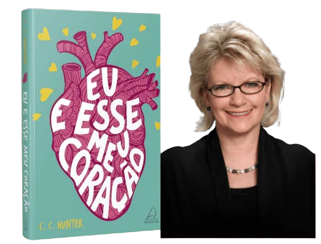

Resumo sobre o meu livro preferido!
Leah MacKenzie, de 17 anos, não tem coração. O que a mantém viva é um coração artificial que ela carrega dentro de uma mochila. Com seu tipo sanguíneo raro, um transplante é como um sonho distante. Conformada, ela tenta se esquecer de que está com os dias contados, criando uma lista de coisas para fazer antes de morrer . De repente, Leah recebe uma segunda chance: há um coração disponível! O problema é quando ela descobre que o doador é um garoto da sua escola e que supostamente se matou! Matt, o irmão gêmeo do doador, se recusa a acreditar que Eric se suicidou. Quando Leah o procura, eles descobrem que ambos têm sonhos semelhantes que podem ter pistas do que realmente aconteceu a Eric. Enquanto tentam desvendar esse mistério, Matt e Leah se apaixonam e não querem correr o risco de perder um ao outro. Mas nem a vida nem um coração transplantado vem com garantias. Quem diria que viver exige mais coragem do que morrer?
Hunter é uma escritora americana conhecida por seus livros de ficção para jovens adultos. Seu nome verdadeiro é Christie Craig e ela nasceu em Alabama, nos Estados Unidos. Ela começou sua carreira escrevendo romances de mistério e suspense para adultos, mas depois decidiu se concentrar em escrever para jovens adultos.
Comprei esse livro ano passado, pois vi muita gente falando bem e me interessei bastante. O livro em si é deslumbrante, com gênero misturado com romance e suspense, mencionou um assunto que eu me interessei bastante que é transplante de coração. No livro, a Leah recebe um transplante de coração, e ao decorrer dos dias ela começa a sentir emoções estranhas com pessoas e certos lugares que ela ia. Ela começou a sentir as emoções do seu doador. Isso me fez ter muita curiosidade, pois isso realmente acontece ou é só na ficção? Quando li fiquei extremamente curiosa e fui pesquisar sobre teorias e relatos, até que encontrei esse site:
Achei um assunto bem interessante e que deveria ser mais estudado. Foi esse livro que me fez ter mais vontade de entrar para o mundo da leitura.
Clique aqui para acessar o site.